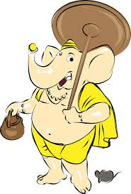

சிவன் மற்றும் பார்வதியின் மூத்த மகன் புல்லையார். பார்வதியார் மஞ்சளை, மஞ்சள் நிறத்தில் இருந்து புல்லையரை உருவாக்கி, தனது சொந்த உடலின் சதைப்பகுதியிலிருந்து பார்வதியை உருவாக்கினார். அவர் மீது புனித கங்கை நீரை தெளிப்பதன் மூலம் அவருக்கு உயிர் கொடுத்தார், மேலும் அவரது புதிய தோழனோடு மகிழ்ச்சியடைந்தார். சிறிது நேரம் கழித்து பார்வதி ஒரு குளியல் எடுக்க விரும்பினாள், வீட்டிற்கு கதவைத் தக்க வைக்க புல்லையாரிடம் கேட்டாள். யாராவது அவரை யாராலும் கடக்க அனுமதிக்கக் கூடாது என்று அவர் சொன்னார்.
தற்செயலாக, புல்லையர் கதவைத் திறந்தபோது, அவரது தந்தை சிவன் தனது பயணத்தின்போது திரும்பி வந்தார், அவருடைய வீட்டின் வாசலில் நின்று யாரோ ஒருவர் நின்று பார்த்துக் கொண்டிருந்தார்.
சிவன் - மிகவும் விரைவான குணமுடைய தேவனாக இருந்தார் - ஒரு கலகக்காரர் தனது சொந்த வீட்டிற்குள் நுழைவதைத் தடுக்கிறார், இளைஞனின் தலையை துண்டிக்கத் தொடங்கினார். தலையில் தூரத்திலிருந்த பறந்து, உடலை தரையில் விழுந்தது.
பாபாவிடம் கேட்டபோது பார்வதி கதவை மூடிவிட்டு, தன் மகனின் உடலை தரையில் படுத்துக் கொண்டாள். கண்ணீரின் வெள்ளத்தில், அவர் தமது ஒரே மகனைக் கொன்றுவிட்டார் என்று சிவாவிடம் சொன்னார், சிறுவனை உயிருக்குமாறு கட்டளையிட்டார். அவர் என்ன செய்தார் என்பதைக் கண்டறிந்தார், சிவன் தனது மகனை மீண்டும் உயிரோடு கொண்டு வர ஒப்புக் கொண்டார், அவர் வெட்டிக் கொண்டிருக்கும் ஒரு இடத்திற்கு பதிலாக அவர் வந்த முதல் தலைவனைப் பயன்படுத்த சபதம் செய்தார்.
சிவா வடக்கைப் பயணித்து, தன் குழந்தையிலிருந்து வேறு வழியின்றி ஒரு தாயைப் பார்க்க வேண்டும் என்று உத்தரவிட்டார். ஒரு ஆழமான காட்டில் யானை மட்டுமே காணப்பட்டது. காலப்போக்கில் ஓடி, வாளை எடுத்து வாங்கி யானையின் தலையை வெட்டினார்கள். பெரிய மற்றும் கனமான தலையைத் தேர்ந்தெடுத்து, அதை மீண்டும் சிவனை எடுத்து தங்கள் மகனின் உடலில் இணைத்தனர். அவரை மீண்டும் உயிர் கொடுத்து, சிறுவன் விழித்தெழுந்து, இந்த நேரத்தில் யானையின் தலையில்.